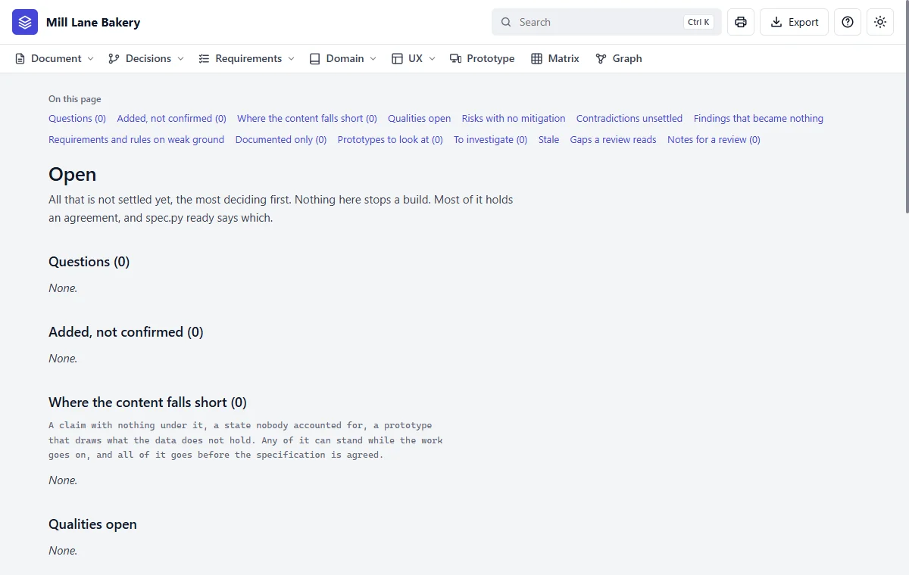

Step 19 of 20 · Change it
Finish and agree it
Say this
Say this to Claude
Is it ready?
What Claude does
It checks everything that could stand in the way, and lists every reason. In the real run, partway through, the answer was:
stale, to be read again and confirmed: D6, N2, R5, SC3, SC3.7
not ready to be agreed
| It must be clear of | Because |
|---|---|
| Open questions for you | A decision is still missing |
| Additions not confirmed | They aren't yours yet |
| Anything stale | Something hasn't been read since a change |
| Prototypes to look at | A drawing may say something no longer true |
| Screens with no design system | Nobody has decided the look |
When nothing is left, it says so:
ready to be agreed: only the user agrees it, with `do set document status agreed`Say this to Claude
Agree it.
What you can do with it now
| To | Do this |
|---|---|
| Show someone one page | Press the printer in the bar |
| Send the whole thing | Press Export, for one file that needs nothing installed |
| Build it | Hand it to a developer, or an AI, who asks it for one requirement at a time with its checks |